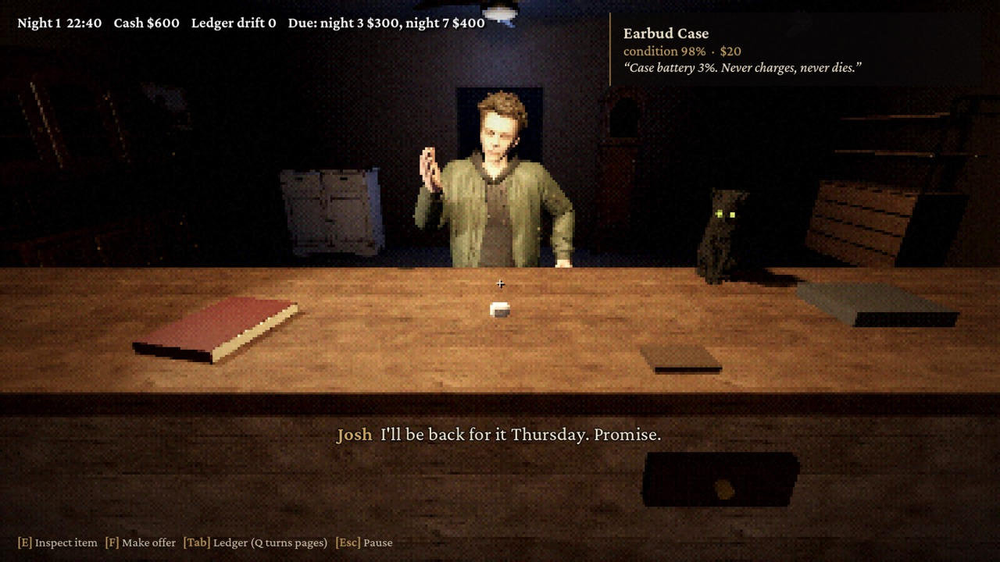
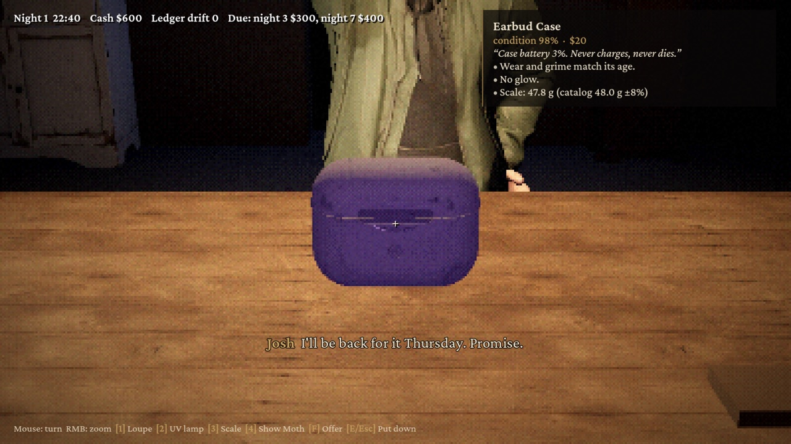
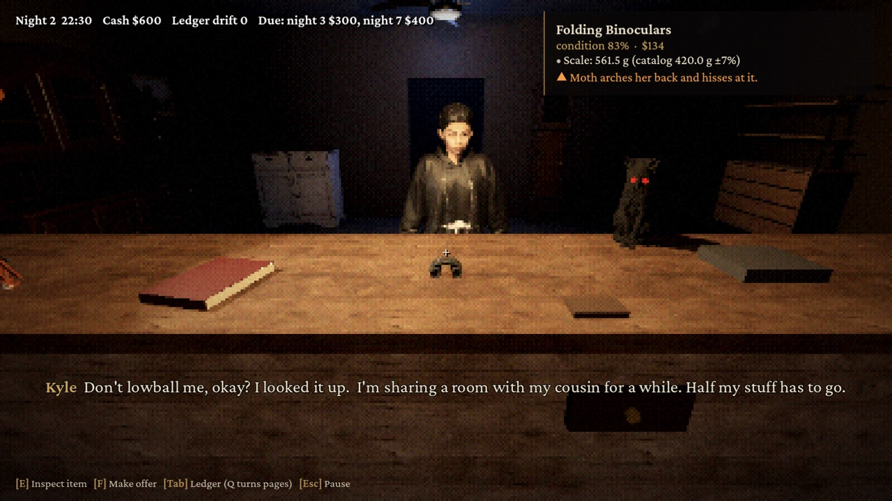
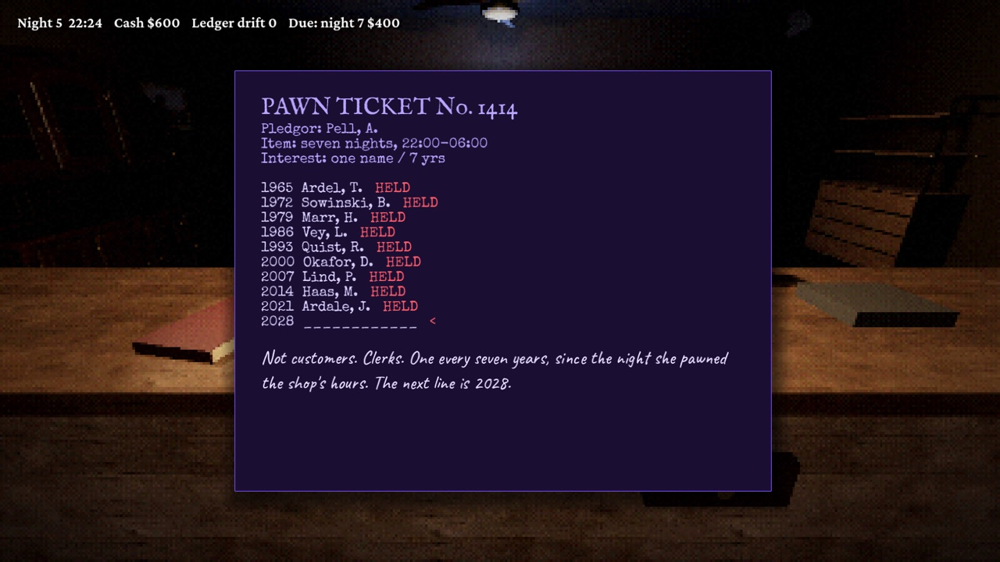
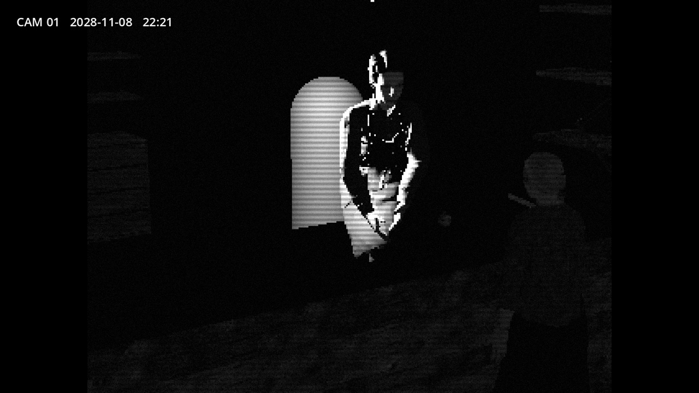
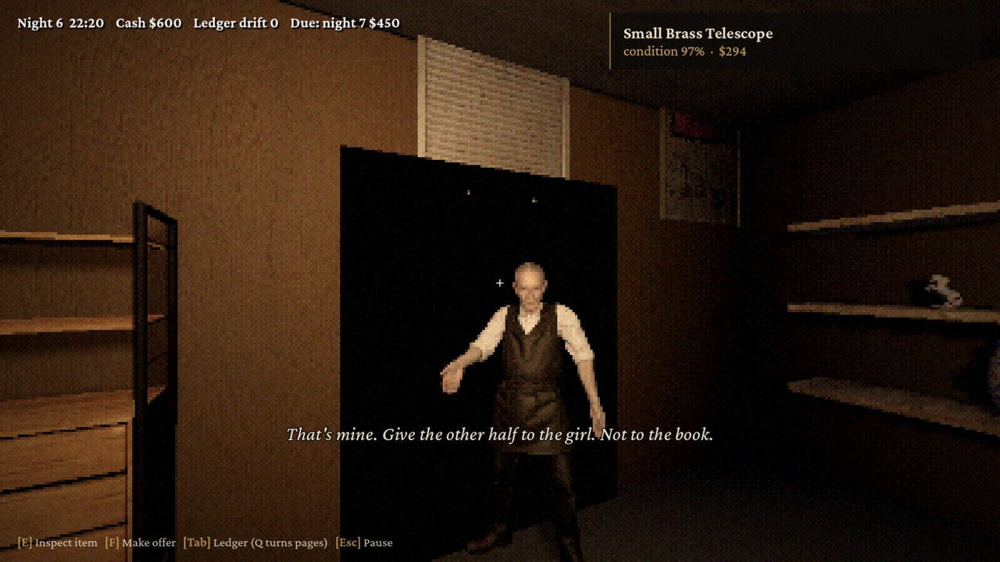

Don't Sell the Cat
Seven nights behind the counter of a pawnshop that opened in 1958. Check what people bring in with a loupe, a UV lamp, a scale and the shop cat. Pay the rent. The ledger writes lines you didn't write, and someone knocks on the back shutter after closing. Don't open it.

Free demo
The demo is the first three nights. On a Mac with Apple Silicon, install Soju, open Didim Labs Store and press Free demo. It downloads, installs and shows up in your library like any other game. Demo saves are kept apart from the full game's.
About the game
Pell & Daughter Loans, 1414 Corvin Street. The owner leaves notes and never comes down. Customers come in one at a time: a mother with a ring, a man who won't take cash, a nurse from the hospital across the street who always comes back for what she pawns. Fakes show under the loupe, under UV or on the scale. Cursed things are harder; Moth, the cat, hisses at them. Most nights.
7 nights
22 scripted visits, plus 14 neighbourhood regulars whose cases change every run.
Choices stick
What you buy, sell or refuse changes who comes back and what they say.
10 endings
Two only appear in the Second Ledger, a harder run that opens after you finish once.
Few big scares
No gore. Flashing lights can be turned down in Settings. No voice acting.






Buy and install
Checkout is handled by Polar, our reseller, which also takes care of sales tax. One purchase covers Mac and Windows.
- Mac: buy in Soju
Install Soju, open Didim Labs Store and press Buy. After you pay, Soju downloads and installs the game by itself.
- Bought on this site
Buy for $2.99, then press Install in Soju on the page you land on. On another Mac, sign in to Soju with Apple or Google using the email you paid with and press Install.
- Windows
The receipt email links the Windows zip. Unzip it and run the exe. Windows install steps.
The Windows version will also be on Steam.
Requirements
| Mac | Windows | |
|---|---|---|
| System | macOS 12 or later | Windows 10 or 11, 64-bit |
| Processor / GPU | Apple M1 or newer | DirectX 12 GPU (runs on Intel HD 615 at Low) |
| Memory | 4 GB | 4 GB |
| Download | 369 MB | 376 MB |
FAQ
How long is Don't Sell the Cat?
About two hours to a first ending. There are ten endings; two only open in the Second Ledger, a harder second run unlocked after finishing once.
Does Don't Sell the Cat run on Mac?
Yes, natively on Apple Silicon (M1 or newer, macOS 12+). Buy it in Soju's store and Soju installs it by itself. One purchase includes the Windows version too.
Is it very scary?
There are only a few big scares, and no gore. Flashing lights can be turned down in Settings.
Which languages are supported?
English and Korean, for both interface and text. There is no voice acting.
Was AI used to make it?
Some 3D character and item models were generated with Meshy and edited for the game, and story text was drafted with AI help and rewritten by us. Props, sound and music were not made with AI. Nothing is generated while you play.
고양이는 팔지 마세요
1958년에 문을 연 전당포의 야간 카운터에서 일곱 밤을 보내는 1인칭 공포 게임입니다. 손님이 가져온 물건을 확대경, UV 램프, 저울, 가게 고양이로 확인하고 집세를 냅니다. 장부에는 내가 쓰지 않은 줄이 생기고, 문을 닫으면 누군가 뒷문 셔터를 두드립니다.
첫 결말까지 약 2시간, 결말 10개, 한국어 지원. $2.99에 맥판과 윈도우판이 같이 들어 있습니다. 맥에서는 소주의 Didim Labs Store에서 구매 버튼만 누르면 결제 후 알아서 설치됩니다.